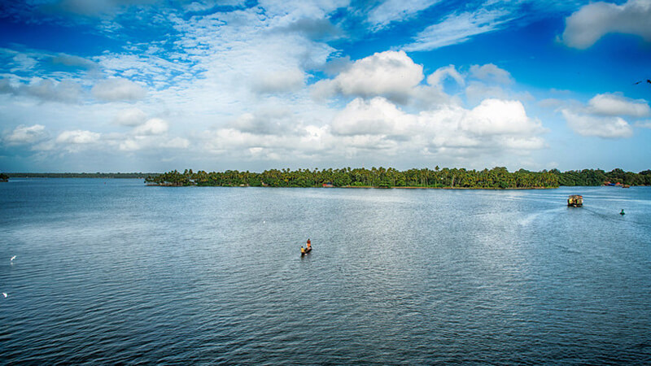

1. Jatayu’s Earth Centre

2. Thangassery Lighthouse

3. Palaruvi Falls

4. Sasthamkotta Lake

5. Kollam Beach

6. Ashtamudi Lake

7. Thenmala


Kollam is the capital of Kerala's cashew industry. Plains, mountains, lakes, lagoons, and backwaters, forests, farmland and rivers make up the topography of the district. The area had trading relationships with Phoenicia and Ancient Rome.
A famous port of international spice trade in ancient India, the present day Kollam is famous for its varied modern industries including cashew nut processing and research, fisheries, etc. Its association with the renowned Ashtamudi Lake makes it the gateway to the magnificent backwaters of Kerala.
Best Season to Visit Kollam: October to March is Best Season to Visit Kollam
Peak Season in Kollam: December to January & May to June is Peak Season in Kollam
Kollam Weather: Minimum Temperature in Kollam: 20°C , Maximum Temperature in Kollam: 36°C